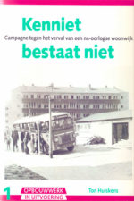
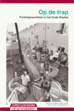
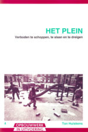
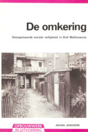
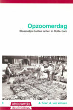
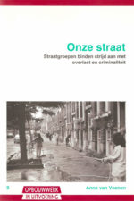
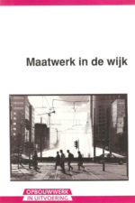
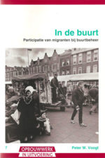

De praktijkbeschrijvingen van de serie Opbouwwerk in uitvoering worden geproduceerd tussen 1988 en 1996, met als motto ‘hoe zet ik als opbouwwerker een probleem om in een georganiseerd initiatief’. Een ambitieus programma, met een duidelijke rol voor de opbouwwerker.
Ter inleiding bij de digitale heruitgave in 2016 blik ik als oud redacteur van de serie terug op de beschreven opbouwwerkpraktijken. Ze zijn de neerslag van een episode in de sociale geschiedenis van Rotterdam waarin opbouwwerkers zoeken naar nieuwe wegen na de activistische periode van de jaren zeventig. Een aantal initiatieven van toen werkt door tot de dag van vandaag. Maar de opbouwwerker als onafhankelijke adviseur van bewonersinitiatieven, om niet ter beschikking gesteld door de gemeente, is anno 2016 schaars geworden.
Na de stadsvernieuwing
Het opbouwwerk komt in Rotterdam tot wasdom als onderdeel van het grote naoorlogse innovatieproject van de stad dat ook daarbuiten toonaangevend zal worden, de stadsvernieuwing in de jaren 1970-1980. De gemeente neemt het initiatief tot het op grote schaal vernieuwen van woningen in de oude wijken, in samenwerking met bewoners. Daartoe wordt een ingenieus apparaat opgebouwd, de ‘projectorganisatie stadsvernieuwing’, waarin daadkracht en energie wordt samengebracht van politici, ambtenaren, bouwkundigen, bewoners en opbouwwerkers. Stadsvernieuwing wordt ook een programma voor het versterken van de lokale democratie. Bewonersorganisaties verwerven medezeggenschap bij het programma van ‘bouwen voor de buurt’ en krijgen het recht om eigen deskundigen op bouwkundig en sociaal gebied aan te trekken.
Taak van opbouwwerkers wordt om bewoners te helpen om zich te organiseren in wijkgerichte belangenorganisaties die onderhandelen met de gemeente over de plannen voor vernieuwing van de wijk. In deze setting ontwikkelen zich opbouwwerkers die weten wat hen te doen staat, met bijbehorend instituut. Opleidingen trekken bevlogen en talentvolle studenten aan.
In de loop van de jaren 1980-1990 loopt deze praktijk van georganiseerde belangenbehartiging tegen grenzen. De economische terugval komt in Rotterdam extra hard aan, met het verplaatsen van de scheepsbouw naar lage lonen landen en het wegvallen van het stukgoed door de komst van de containers. Hoge werkloosheid in arbeiderswijken gaat samen met bezuinigingen op collectieve voorzieningen. De stadsvernieuwing in de eerste ring is voltooid en stuit in andere wijken op gestegen woonlasten en afnemende budgetten.
Voor oorspronkelijke bewoners die niet verhuisden naar naoorlogse wijken verandert de buurt vaak onherkenbaar door de komst van gastarbeiders en hun gezinnen. Veel mensen trekken zich terug in een eigen kring of raken geïsoleerd.
Acties voor betaalbare huren en voor een schone, hele en veilige wijk blijken in deze nieuwe maatschappelijke situatie een enorm reservoir van onvrede te kunnen aanboren, met een verwarrende mix van ontheemding, vreemdelingenangst, boosheid over gebrek aan perspectief en racisme.
In de jaren 1970 stond collectieve belangenbehartiging door bewoners in het perspectief van democratisering van de samenleving. Deze verwachting begint te verdwijnen. Het zoeken is naar andere, nieuwe aanknopingspunten voor bewonersinitiatief en naar een nieuwe rol voor de opbouwwerker.
Campagneleider
Kenniet bestaat niet (1988) en Het Witte Dorp Forever (1983, in: Opbouwwerkcampagnes 1997) zijn de slogans van buurtcampagnes. De leuzen klinken strijdbaar, maar uit de campagneverslagen blijkt ook een heroriëntatie op het activisme van het vroegere opbouwwerk.
Als campagneleider maakt de opbouwwerker zich los uit bestaande verhoudingen met strijd tussen personen en groepen, zo lezen we. Hij neemt de kop, begint met iets anders in impasses, doorbreekt de dominantie van de grote monden en stimuleert positieve krachten. En vooral, hij schept sfeer, een plek en beweging waar je bij wilt horen en die energie geeft. Aan het einde van de campagne geeft de opbouwwerker het initiatief terug aan een nieuw gevormde bewonersgroep.
In de rol van campagneleider creëert de opbouwwerker ruimte om op te treden als zelfstandige actor, op enige afstand van de bewonersorganisatie waarmee hij/zij is gelieerd. Hij zoekt een eigen positie en verantwoordelijkheid in het krachtenveld van bewoners, gemeente en instellingen.
Het Enige Echte Aktieplan van Kenniet bestaat niet dat uit de stencilmachine rolt bevat niet alleen eisen aan gemeente en woningcorporatie, maar ook aan bewoners. De campagne zet de verpaupering van portiekflats uit de jaren 1950 op de agenda van de stadsvernieuwing die tot dan is gericht is op de vooroorlogse woningvoorraad. Hoogvliet zal met Overschie voorloper worden van herstructurering van naoorlogse wijken.
Afspraken en normen
De opbouwwerker komt grote maatschappelijke vraagstukken tegen op de km2, op het binnenterrein, in het trappenhuis, op straat. De thema’s van de boekjes vormen een catalogus van hardnekkige kwesties: vernielingen en ruzies van kinderen en jongeren op een plein, vervuiling en conflicten in portieken, overlast van heroïneverslaafden in woonstraten, donkere en onveilige achterpaden, ouderen die op zichzelf zijn aangewezen door het verdwijnen van sociale verbanden en zich terugtrekken.
Het samen met bewoners formulieren van eisen aan gemeente en woningcorporatie en het organiseren van acties blijkt in deze situaties hooguit deel van de oplossing.
Op de trap (1993) beschrijft hoe opbouwwerk en woningcorporatie portiekgesprekken organiseren om oplossingen te vinden voor het schoonhouden van de gemeenschappelijke toegang van de nieuwe portieketagewoningen die intensief worden gebruikt door soms tientallen kinderen en bewoners. Vervuiling en geluidsoverlast leiden tot onderlinge spanningen en irritaties. Het opbouwwerk probeert een steuntje in de rug te geven bij het maken van afspraken tussen bewoners over huisregels en gaat op zoek naar initiatiefnemers die het voortouw willen (en kunnen) nemen.
Het maken van afspraken over gedrag in de openbare ruimte zal een blijvend element worden in samenlevingsopbouw. Het is onderdeel van het Opzoomeren. De projecten van gemeente en opbouwwerk Stadsetiquette (2000-2002) en Mensen maken de stad (2002-2006) gaan een stap verder, met afspraken over leefregels in de straat die op bordjes aan de muur worden opgehangen: ‘Bewoners van deze straat groeten elkaar en verwelkomen nieuwe bewoners’, ‘Wij doen ons huisvuil in de daarvoor bestemde containers’, ‘Wij letten op elkaars woning’, ‘Wij houden onze portieken schoon’. De bordjes lijken tien jaar later herinneringen aan een sociaal experiment uit een andere tijd, met een erg groot vertrouwen in een appèl op bewoners.
Het plein (1993) schetst de strijd om het gebruik van de plek tussen groepen jongeren, kinderen en omwonenden. Het escaleert, met bedreigingen, beroving en geweld van gangs. Een kleine groep bewoners neemt een dominante positie in. Vanuit het gevoel nooit mee te tellen, bevestigd door hulpverleners en buurthuis, proberen ze de baas te zijn, als de enige echte buurtbewoners.
De ‘herovering’ van het plein door een samenwerkingsverband van opbouwwerk, politie en omwonenden wordt stap voor stap beschreven. “We schoten tekort in het stellen van grenzen”, zegt de opbouwwerker, “het stellen van normen en het bepalen van grenzen tussen verdraagzaamheid en tolerantie aan de ene kant, en overlast, hinder en machtsuitoefening blijkt ingewikkelder dan het lijkt.” Hij zoekt niet naar orde, maar naar normen die ruimte scheppen. “Een vrouw met een hoofddoek, naast een geheel opgetutte travestiet.” Nauwe samenwerking met de politie blijkt spannend. “Uit eigen kring hoorde ik soms: samenwerken met de repressie, je wordt fatsoensrakker.”
De opbouwwerker is op zoek naar een ‘thuis’ op straat, met recreatief en sportief werk op pleinen, georganiseerd door een vaste staf mensen. Het idee zal vorm krijgen in Thuis Op Straat T.O.S., de organisatie die ruim twintig jaar activiteiten organiseert op pleinen. En in Duimdrop, containers voor speelgoed uitleen, bemenst door medewerkers van de banenpool en vrijwilligers.
Samen iets doen
De Omkering (1989) beschrijft hoe de opbouwwerker de bal terugrolt als bewoners klagen over onveiligheid van het binnenterrein en nalatigheid van de huisbaas, met de vraag wat ze zelf kunnen doen. Bewoners krijgen ‘een aanbod’ van de bewonersorganisatie voor het afsluiten van het binnenterrein met een hek, tegen betaling van een eigen bijdrage van f 15. Een groep van 35 bewoners gaat langs de deuren voor een handtekening. Zo’n 80% van de bewoners gaat akkoord. Wat te doen met de 20% die een bijdrage weigert, ook zij hebben recht op een sleutel van het hek. Zij worden uitgenodigd zelf de sleutel af te halen in de wijkwinkel, bij de bewoners van de woonomgevingsgroep.
Het initiatief appelleert aan de eigen verantwoordelijkheid voor de sociale veiligheid in de buurt. Door verhuizingen en de komst van nieuwe bewoners spreken bewoners elkaar niet meer aan hun gedrag. “Het gaat om het ontwikkelen van nieuwe buurtnormen waarmee groepen met uiteenlopende leefstijlen zich kunnen identificeren”, zegt de opbouwwerker, “de vanzelfsprekendheid van vroeger moet nu georganiseerd worden.”
Het boekje over het initiatief wordt in een paar dagen geproduceerd, om aangeboden te worden aan de gemeenteraad bij de bespreking van het rapport Het nieuwe Rotterdam in sociaal perspectief, over sociale vernieuwing. De Omkering wordt al snel tot voorbeeld van het nieuwe beleid.
 Niet minder uitdagend is Een nieuwe zonnetje (1993). Veel oudere bewoners in Oud Mathenesse komen door het wegvallen van de traditionele sociale verbanden van vereniging en kerk in een sociaal isolement. De veranderingen in de wijk en de komst van nieuwe bewoners worden mede daardoor bedreigend. Acties voor voorzieningen van de werkgroep ouderen zijn succesvol maar blijken toch de negatieve spiraal te versterken, de werkgroep wordt een ontmoetingsplek van bewoners die elkaar ervan overtuigen dat de wijk achteruit gaat.
Niet minder uitdagend is Een nieuwe zonnetje (1993). Veel oudere bewoners in Oud Mathenesse komen door het wegvallen van de traditionele sociale verbanden van vereniging en kerk in een sociaal isolement. De veranderingen in de wijk en de komst van nieuwe bewoners worden mede daardoor bedreigend. Acties voor voorzieningen van de werkgroep ouderen zijn succesvol maar blijken toch de negatieve spiraal te versterken, de werkgroep wordt een ontmoetingsplek van bewoners die elkaar ervan overtuigen dat de wijk achteruit gaat.
De opbouwwerker concludeert dat belangengericht opbouwwerk dat inspeelt op problemen soms productief is, maar dat het ook kan leiden tot een louter eisende opstelling of tot het aanwakkeren van sluimerende vooroordelen tegen nieuwkomers. Hij slaat een nieuwe weg in met de ontwikkeling van ouderennetwerken rond activiteiten die leuk, aantrekkelijk en uitdagend zijn. Bij de keuze wordt gekeken naar activiteiten die zich goed lenen voor het opbouwen van nieuwe sociale netwerken. Voorbeeld waardoor hij zich laat inspireren is een tennisbaan op een binnenterrein in het Oude Westen. In Oud Mathenesse wordt gekozen voor onder meer het opzetten van een jeu de boules club en een zangkoor.
De opbouwwerker ontpopt zich tot constructeur van nieuwe sociale verbanden. Het nieuwe concept van ‘sociale netwerken’ dat wordt ontwikkeld in Een nieuw zonnetje zal grote impact hebben op de ontwikkeling van het opbouwwerk in Rotterdam. Het vormt de kern van de nieuwe oriëntatie van het opbouwwerk, omschreven met de klassieke term ‘samenlevingsopbouw’. In de jaren negentig zal dit een tweede doelstelling vormen van het opbouwwerk, naast ‘belangenbehartiging door zelforganisatie’ uit de periode van de stadsvernieuwing.
Het ontwikkelen van sociale netwerkjes in de straat zal centraal komen staan in het Opzoomeren. In Opzoomerdag (1994) wordt de manifestatie beschreven bij de afsluiting van het gemeentelijk project Sociale Vernieuwing. Op 32 pleinen gaan onder leiding van een pleinregisseur teams aan de slag met het realiseren van een gevarieerd programma met acht ‘uitdagingen’ met het vegen van de straat en het vullen van geveltuinen met planten, het uitbaggeren van een singel door jongeren, een optreden van een zelf geformeerd wijkorkest in een tent op het plein en een wijkdiner gemaakt door koks uit de wijk. In het boekje kijken pleinregisseurs van Pendrecht, Beverwaard, Bergpolder en Oud Charlois terug. De manifestatie wordt door de opbouwwerker/projectleider getypeerd als ‘samenlevingsopbouw in veelvoud’. Door als bewoners ’samen iets te doen’ kunnen sociale netwerken ontstaan in de buurt.
De opbouwwerker/coördinator van Opzoomer Mee benadrukt dat het niet alleen gaat om sociale contacten en leuke dingen. Inzet is ook het stimuleren van onderlinge hulp en dienstverlening, het opbouwen van een signaleringssysteem naar gemeentelijke diensten en het aanspreekbaar maken van mensen op een andere manier dan via een wijkvergadering. Doel is het ontwikkelen van relaties tussen mensen onderling en met instanties die in de buurt werkzaam zijn.
De manifestatie Opzoomerdag wordt het startschot voor de Opzoomercampagnes die Opzoomer Mee sinds 1994 jaarlijks zal organiseren, in samenspel met opeenvolgende stadsbesturen van uiteenlopende signatuur.
Het opbouwwerk zoekt nieuwe samenwerkingspartners, zoals gemeentewerken (schoon en heel), politie (wijkveiligheid), arbeidsbureau (werk in de wijk) en sociaal-cultureel werk (empowerment, emancipatie). Belangrijke speler is het projectbureau Sociale Vernieuwing dat nieuwe uitdagingen en mogelijkheden voor samenspel biedt.
Onderzoeker Kees Fortuin bespreekt in 1996 een aantal brochures van de serie Opbouwwerk in uitvoering. Hij ziet in de beschreven nieuwe aanpakken inspiratiebronnen voor Opzoomeren en Sociale Vernieuwing. (Samen leven: een lach en een groet doet een mens zo goed.)
Sociale netwerken in de buurt
Onze straat (1996) speelt zich af in Middelland Zuid, stadsvernieuwingsgebied van de 2e generatie. Er is strijd tussen groepen bewoners over de aanpak, sloop en nieuwbouw of renovatie. Leegstaande panden worden gekraakt door heroïneverslaafden, er wordt gedeald op straat, de prostitutiezone van de G.J. de Jonghweg ligt om de hoek. De bewonersorganisatie is verwikkeld in het circuit van de stadsvernieuwing.
Opbouwwerkers krijgen te horen van de nieuwe voorzitter van de bewonersorganisatie dat ze de straat op moeten, weg uit de overleggen, terug naar de bewoners, goed luisteren en kijken, achterhalen wat met goed gevolg opgepakt kan worden. Een aantal overlast gevende drugspanden wordt gesloten, dichtgemetselde woningen worden met steun van de bewonersorganisatie in gebruik genomen door jongeren. Bewoners organiseren zich in straatgroepen en nemen stap voor stap hun straat weer in bezit met het aanleggen van geveltuintjes, ze zetten zwembadjes op straat voor de kinderen.
Tien jaar later worden na protest tegen sloop de woningen in de Zwaerdecroonstraat en de Snellinkstraat omgezet in ‘klushuizen’. De panden worden na herstel van casco en fundering te koop aangeboden als zelfbouwproject, waarbij bewoners binnen de kale muren van het pand zelf naar eigen inzicht een woning bouwen. De zelfbouw leidt tot de komst van nieuwe ondernemende bewoners naar de straat die al gauw ook actief worden in de buurt.
Voor een aantal bewoners is in 1995 het doel van de straatgroep bereikt als de drugspanden weg zijn. Ze hebben geen behoefte aan meer sociale contacten in de straat. Dat botst met bewoners die dat wel graag willen en veel activiteiten organiseren. De discussie leidt tot de constructie van ‘de schaal van sociale samenhang’, een hulpmiddel om te bespreken welke vormen van sociaal contact in een straat worden nagestreefd. De schaal loopt van 0 (elkaar niet groeten, anonimiteit) tot 10 (elkaar helpen thuis, zorgen voor elkaar). Opbouwwerkers neigen in de situatie van Middelland Zuid op dat moment naar een keuze voor sociaal contact dat zich beperkt tot contacten op straat: bewoners houden rekening met elkaar, veroorzaken geen (geluid)overlast, zorgen ervoor dat de straat schoon blijft en houden een oogje op kinderen en verwarde personen. Een keuze voor niveau 05 op de schaal, ook omschreven als ‘een beetje buurt’ .
De discussie is hiermee niet beëindigd. Anno 2016 schept een terugtrekkende overheid nieuwe feiten, mensen worden aangewezen op steun binnen hun eigen sociaal netwerk. Opzoomer Mee voert de campagne Lief en leed om onderlinge steun in de buurt te bevorderen.
De discussie over sociale relaties in de buurt heeft een lange traditie. Sociologen uiten vanaf de jaren zeventig kritiek op het vooral in Rotterdam levende ideaal van de wijk als gemeenschap. De volksbuurt bestaat niet meer, luidt de stelling, de bevolking van stadswijken is divers, contacten die voor mensen belangrijk zijn liggen vaak buiten de buurt. Daar staat tegenover dat voor bepaalde groepen mensen, zoals gezinnen met kinderen en ouderen, contacten in de directe woonomgeving belangrijk zijn in het dagelijks leven. Wijk en buurt blijven ook een domein voor gezamenlijke initiatieven voor een goede woon-en leefsituatie.
De discussie over de betekenis van de buurt gaat ook over normen. Over de stadslucht die vrij maakt en de angst dat individuen en minderheden worden onderworpen aan regels van een dominante groep. Uiteenlopende opvattingen over de buurt worden snel botsende overtuigingen, met karikaturen over opbouwwerkers die streven naar het stichten van dorpen in de stad en over stadssociologen die menen dat de straat en de buurt er niet toe doen in sociale netwerken van stedelingen.
Werk, zelforganisatie
De praktijkbeschrijvingen hebben een methodische invalshoek, ze nemen het handelen van de opbouwwerker als professional tot uitgangspunt en proberen de logica ervan te achterhalen. Twee andere uitgaven van de serie hebben een meer beschouwend karakter.
Maatwerk in de wijk (1991) beschrijft de bijdrage van opbouwwerkers aan het opzetten van werkloosheids- en werkgelegenheidsprojecten. Dit gebeurt vanuit stichtingen Werk in de wijk, die door het opbouwwerk worden opgezet in samenwerking met arbeidsbureau en deelgemeenten.
Opbouwwerkers betreden hiermee een nieuw werkterrein. Via banenpool (gestart in 1989) en Melkertbanen (1994) kan nieuw werk worden gemaakt dat aansluit op ambities en knelpunten in de wijk. Werk dat eerder werd wegbezuinigd (conciërges) of nieuwe banen, zoals Duimdropbeheerder, toezicht- en servicemedewerker op de fietsroute van de Maastunnel en werk in autosleutelwerkplaatsen, klussendiensten en wijkbussen. De ‘werkgelegenheidsopbouwwerkers’ brengen in kaart aan welke voorzieningen behoefte bestaat en de projecten worden gerealiseerd met mensen die actief zijn in de wijk.
De aanvullende werkgelegenheid is een tijdelijke maatregel in reactie op de economische neergang en is gericht op doorstroming naar ‘reguliere banen’, een doelstelling die niet realistisch blijkt voor de meeste mensen in de banenpool.
In de buurt (1994) heeft als ondertitel ‘participatie van migranten bij buurtbeheer’. In buurten met veel Turkse en Marokkaanse bewoners probeert het opbouwwerk contact te leggen via huisbezoeken. Een groep Turkse vrouwen krijgt steun bij het inrichten van een binnenterrein als eigen ontmoetingsplek en speelplaats voor kinderen, er zijn gesprekken met moskeebesturen over stadsvernieuwingsplannen. Zelforganisatie van groepen migranten wordt gezien als mogelijkheid voor emancipatie en integratie binnen de Nederlandse samenleving: eigen organisaties kunnen bijdragen aan de ontwikkeling van eigen kracht en aan communicatie op voet van gelijkheid met de omgeving.
De vorming van Marokkaanse en Turkse culturele verenigingen is omstreden, vooral gezien de vaak ondergeschikte positie van vrouwen bij immigranten van de eerste generatie. Daar staat tegenover dat veel opbouwwerkers zijn opgegroeid met herinneringen aan een verzuilde maatschappij waarin kerkelijke en levensbeschouwelijke instellingen een grote plaats innemen. Ze maken zich daaruit vaak los, maar religieus geïnspireerde verbanden zijn voor hen niet vreemd of bedreigend. Het wordt vaak gezien als een overgangsfase in een emancipatie- en integratieproces in de Nederlandse samenleving. De ontwikkeling is complexer gebleken. Oriëntatie op eigen kring heeft ook geleid tot parallelle samenlevingen waarin mensen worden opgesloten.
Bewonersorganisatie en bewonersparticipatie
Het opbouwwerk zoekt nieuwe samenwerkingspartners, zoals gemeentewerken (schoon en heel), politie (wijkveiligheid), arbeidsbureau (werk in de wijk) en sociaal-cultureel werk (empowerment, emancipatie). Belangrijke speler is het projectbureau Sociale Vernieuwing dat nieuwe uitdagingen en mogelijkheden voor samenspel biedt.
Het sociale landschap verandert in de jaren negentig. Bewonersorganisaties verliezen hun centrale rol in de wijk. De inzet van opbouwwerkers verschuift van ondersteuning bij belangenbehartiging naar het initiëren van nieuwe sociale netwerken om maatschappelijke onvrede het hoofd te bieden en naar het ontwikkelen van sociale projecten. De opbouwwerker komt daarbij gaandeweg in een positie van derde, tussen diverse bewonersgroepen en instanties. De bewonersorganisatie blijft uitvalsbasis maar het karakter van de organisatie verandert naar een meer facilitaire instelling voor een los samenwerkingsverband van bewonersgroepen in de wijk.
Deze ontwikkelingen voltrekken zich niet zonder slag of stoot. Het is een gecompliceerd en omstreden proces voor zowel opbouwwerker en als voor bewoners.
Voor het bewonerskader is de bewonersorganisatie spreekbuis van de wijk en actieve bewoners worden zo ook vaak tegemoet getreden door de gemeente. In een aantal wijken wordt gepoogd deze traditie voort te zetten. Daarbij komt het voor dat een opbouwwerker overblijft met een klein groepje bewoners. Een overgang naar een meer voorwaardenscheppende organisatie is een ingewikkelde opgave voor bewonerskader dat is gevormd in de belangenstrijd tijdens de periode van de stadsvernieuwing. Heldere structuren en werkwijzen voor een nieuwe opstelling ontbreken voor alsnog.
Voor het opbouwwerk is sinds de jaren 1970 de relatie met de bewonersorganisatie een belangrijk gegeven. Het is geen eenvoudige positie, het plaatst de opbouwwerker in een conflictvolle omgeving. Maar het biedt ook de mogelijkheid (en legitimatie) voor een langdurige aanwezigheid in een wijk, met een grote professionele handelingsruimte om te kunnen werken vanuit directe contacten met bewoners. De horizontale en gedecentraliseerde organisatiestructuur van de stedelijke opbouwwerkorganisatie is toegesneden op een grote mate van professionele autonomie, met collegiale toetsing.
De veranderingen van de bewonersorganisaties en van de positie van het opbouwwerk in de wijk leiden tot een roep om meer ‘sturing’ en het organiseren van het werk in ‘projecten’.
Daar komt bij dat gemeente en woningcorporaties in de jaren 1990 vormen van bewonersparticipatie ontwikkelen waarin bewonersorganisaties en opbouwwerk geen centrale rol hebben. De gemeentelijke budgetten voor opbouwwerk worden overgedragen naar de deelgemeenten, met een grotere sturing van het werk via ‘prestatie-eisen’. De opbouwwerker komt daarmee in de rol van sociaal projectmedewerker en verliest vaak de positie van onafhankelijk ondersteuner van bewonersgroepen.
Er breekt een nieuw hoofdstuk aan in de geschiedenis van het Rotterdamse opbouwwerk, met sociale projecten op een breed terrein, uitgevoerd in samenwerkingsverbanden met andere sociaal werkers in de wijk. De gemeente zal ook zelf het voortouw nemen met nieuwe vormen van sociale interventie, onder leiding van ‘stadsmariniers’.
Anne van Veenen
augustus 2016
Met dank aan Nel ten Boden, Ed Gloudi, Ton Huiskens en Johan Janssens
• De serie Opbouwwerk in uitvoering werd vanaf 1997 enkele jaren voortgezet door het Landelijk Centrum Opbouwwerk LCO. Opbouwwerkcampagnes (1997), met beschrijvingen van campagnes in Rotterdam en Deventer, is de eerste van een nieuwe reeks praktijkcahiers.
•• Alle beschreven edities van de serie Opbouwwerk in uitvoering zijn hier te downloaden